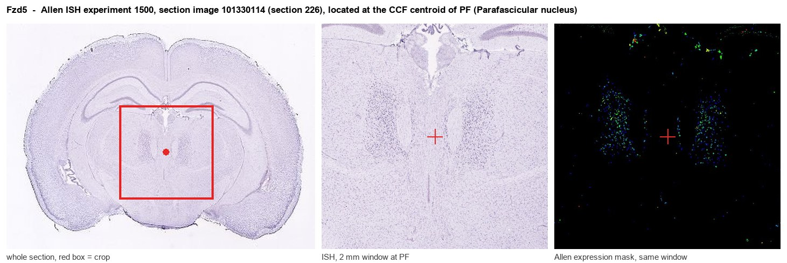
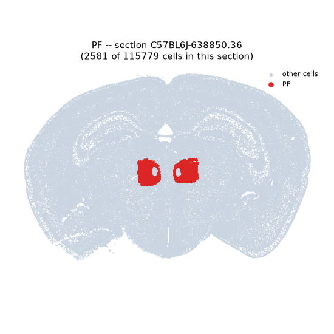
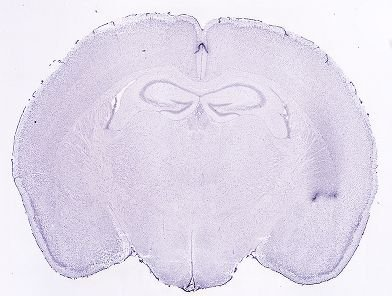
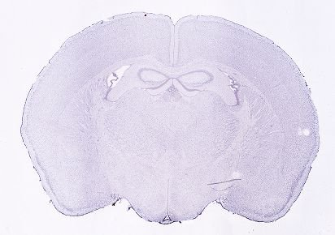
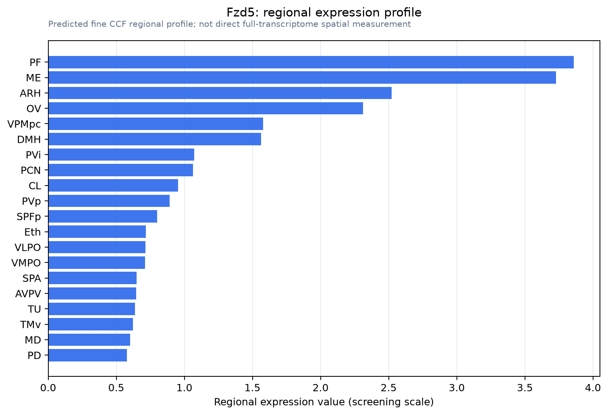

Fzd5
Frizzled-5 (Fz-5) (mFz5)
Spatial tier: STRICT_EXCLUSIVE · Class: GPCR · Top region: PF (Parafascicular nucleus) · Positive regions: 8/554
48.2Discovery Score
44.2Targetability Score
CEvidence grade C
What this means: Fzd5: predicted fine-region profile is strict-exclusive, with 8 positive regions out of 554 (limit 12); direct spatial validation is required.
Function in PF: evidence, prediction, innovation
- Gene function
- FZD5 is a seven-pass Wnt receptor that with LRP5/6 transduces canonical Wnt/beta-catenin signalling and can engage Dishevelled-dependent planar-cell-polarity pathways; ligands include Wnt5a, Wnt7 and Wnt9b. It is essential for yolk sac and retinal vascular development and supports neuronal polarity and dendritic morphogenesis.
- Region function
- The parafascicular nucleus, the caudal intralaminar thalamic nucleus projecting heavily to striatum and cortex, signals salient events and supports attention, sensorimotor coordination, habit formation and flexibility.
- Published in this region
- direct Liu et al. 2008: Fz5 is expressed in the PFN; conditional deletion causes progressive, cell-autonomous loss of adult PFN neurons, sparing proliferation, migration and axon growth/targeting. Wnt9b, the likely ligand, and beta-catenin transcripts fall in Fz5-null PFN, implying a feedback loop maintaining Wnt components; the motor phenotype showed a PFN sensorimotor role.
- Predicted function
- Prediction: FZD5 sustains an autocrine Wnt9b-beta-catenin loop keeping adult PF neurons alive, not instructing development. Acute AAV-Cre deletion of floxed Fzd5 in adult PF should cause delayed, progressive degeneration with deficits in attentional set-shifting and habit learning, not gross motor failure. FZD5-selective Wnt surrogates may be neuroprotective in the Parkinson-vulnerable intralaminar thalamus.
- Innovation
- ★★☆☆☆ 2/5 A dedicated conditional-knockout paper establishes the link, leaving only behavioural and degeneration-onset questions.
- Tools
- Floxed Fzd5 allele with Cre drivers (Liu and Nathans); anti-FZD5 antibodies and recombinant mouse FZD5-Fc are commercial; recombinant Wnt9b/Wnt5a and FZD5 Wnt surrogates; PF access via Slc17a6-Cre or AAV-Cre.
- References
Direct evidence located at the region

Allen ISH experiment 1500, section image 101330114 (section 226): the section that contains the CCF centroid of Parafascicular nucleus according to the Allen image-to-atlas alignment (reference_to_image), with a 2 mm window around that point. Left: whole section, red box = window. Middle: ISH signal. Right: Allen's expression-mask view of the same window. open this image in the Allen viewer
Look it up yourself: Allen Mouse Brain ISH for Fzd5Allen reference atlas: PF (structure 930)ABC Atlas MERFISH viewer(in the ABC Atlas choose dataset MERFISH-C57BL6J-638850-CCF, colour cells by gene "Fzd5" or by parcellation_substructure "PF")All genes confined to PF + 3-D brain
Direct spatial evidence
MERFISH REGION LOCATOR

DIRECT ALLEN ISH

DIRECT ALLEN ISH

Regional expression figure

Predicted WMB × fine-CCF profile; not direct full-transcriptome spatial measurement.
Spatial profile
Evidence and specificity
- Evidence status
- PREDICTED_FINE
- Direct sources
- None; predicted localization only
- Exclusive threshold
- 12 positive regions out of 554
- Spatial specificity
- 0.391
- Top-region fraction
- 0.116
- Filter status
- PASS
Interpretation limits
- Cell-type-to-region projection is imputed expression, not direct spatial measurement.
- Adult reference atlases do not establish stability across age, sex, strain, state, or disease.
- Transcript abundance does not guarantee protein abundance or genetic-tool performance.